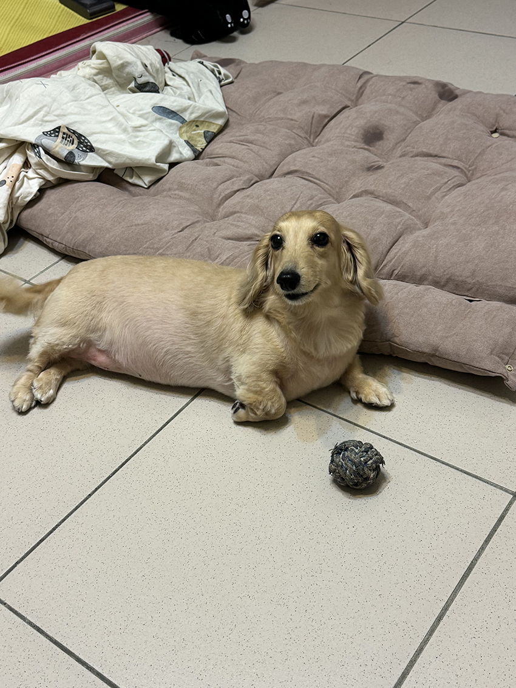
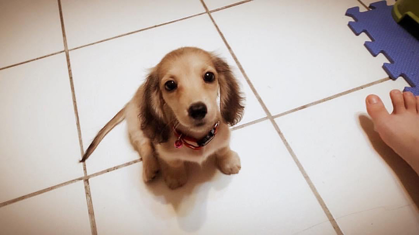
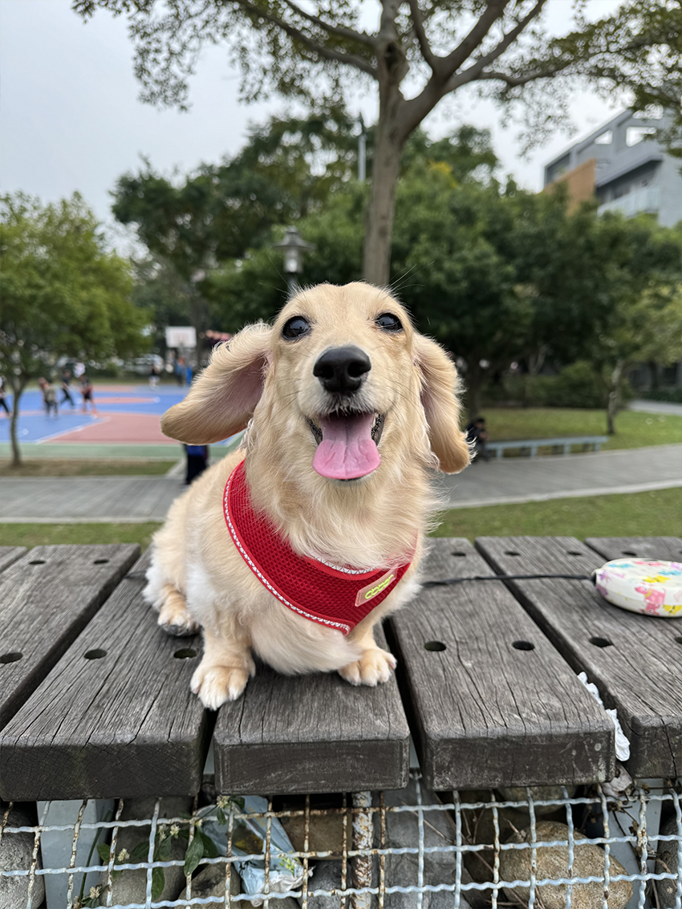

世界上最萌的臘妹
曾玟翔│平鎮營運處＼Custom課
|  | ||
| 這是我家臘妹，名叫奶茶，綽號兔兔，因為跳起來跟跑起來很像兔子。 |
今年準備要過9歲生日了，但看起來還是非常的稚嫩可愛。一開始去狗舍看到她時，她膽小的躲在角落裡，並一臉無辜地看著我。在聽狗舍管理員介紹下，才發現她居然生日跟我同天，就決定要養並馬上把她帶回家。
|  | ||
| 回到家第一件事情是躲在我的腳邊，並膽小的環顧四周，那時候她才兩個月大。 |
一切正要開始訓練，包括吃飯，上廁所等等的指令。奶茶學習力很強一下就學會了，也很幸運的養到了一隻很乖巧的臘腸。個性溫和且黏人，也很愛撒嬌。但出去散步一樣展現她膽小害羞的個性，會一直依賴著主人身旁。她平常最喜歡的事情是吃飯，別看她一臉淑女樣可是7公斤的小胖子呢！
|  | ||
| 目前減肥的方式就是透過減重飼料及散步。 |
她陪著我從大學到當兵到出社會到現在。幾乎每天都一起睡，心情不好的時候也會跟她訴苦，心情好的時候會買她也喜歡吃的食物一起慶祝。只希望時間不要過那麼快，她可以平平安安健康的，陪我到很久之後。